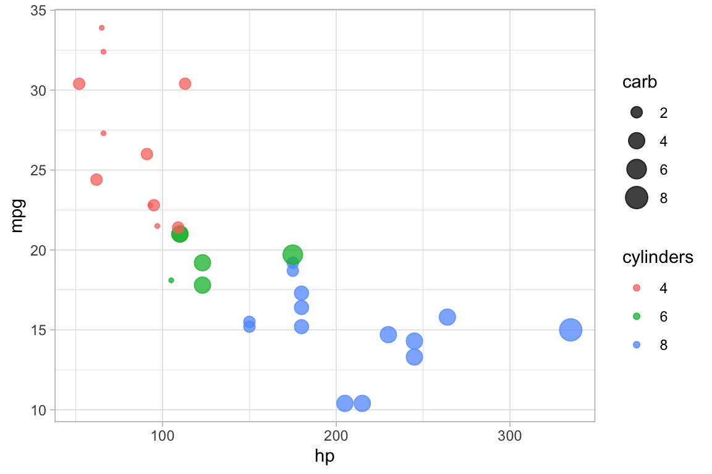
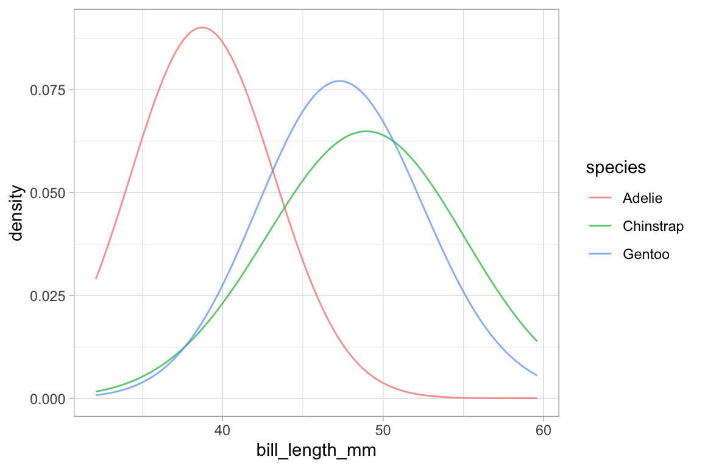

Formula Interface for ggplot2
Daniel Kaplan and Randall Pruim
July, 2020
Source:vignettes/ggformula.Rmd
ggformula.RmdFormula-driven graphics
There are several excellent graphics packages provided for R. The
ggformula package currently builds on one of them,
ggplot2, but provides a very different user interface for
creating plots. The interface is based on formulas (much like the
lattice interface) and the use of the chaining operator
(|>) to build more complex graphics from simpler
components.
The ggformula graphics were designed with several user
groups in mind:
beginners who want to get started quickly and may find the syntax of
ggplot2()a bit offputting,those familiar with
latticegraphics, but wanting to be able to easily create multilayered plots,those who prefer a formula interface, perhaps because it is familiar from use with functions like
lm()or from use of themosaicpackage for numerical summaries.
The basic formula template
The basic template for creating a plot with ggformula
is
gf_plottype(formula, data = mydata)or, equivalently,
mydata |> gf_plottype(formula)where
plottypedescribes the type of plot (layer) desired (points, lines, a histogram, etc., etc.),mydatais a data frame containing the variables used in the plot, andformuladescribes how/where those variables are used.
For example, in a bivariate plot, formula will take the
form y ~ x, where y is the name of a variable
to be plotted on the y-axis and x is the name of a variable
to be plotted on the x-axis. (It is also possible to use expressions
that can be evaluated using variables in the data frame as well.)
The first form of the tempate is useful for simple plots or for multi-layered plots where different layers use different data. The second form is useful for multi-layered plots or plots with many arguments.
Here is a simple example:

mtcars |> gf_point(mpg ~ hp)
Selecting the glyph type
The “kind of graphic” is specified by the name of the graphics
function. All of the ggformula data graphics functions have
names starting with gf_, which is intended to remind the
user that they are formula-based interfaces to ggplot2:
g for ggplot2 and f for
“formula.” Commonly used functions include
-
gf_point()for scatter plots -
gf_line()for line plots (connecting dots in a scatter plot) -
gf_density()orgf_dens()orgf_histogram()orgf_dhistogram()orgf_freqpoly()to display distributions of a quantitative variable -
gf_boxplot()orgf_violin()for comparing distributions side-by-side -
gf_counts()for bar-graph style depictions of counts. -
gf_bar()for more general bar-graph style graphics
The function names generally match a corresponding function name from
ggplot2, although
-
gf_counts()is a simplified special case ofgeom_bar(), -
gf_dens()is an alternative togf_density()that displays the density plot slightly differently -
gf_dhistogram()produces a density histogram rather than a count histogram.
Each of the gf_ functions can create the coordinate axes
and fill it in one operation. (In ggplot2 nomenclature,
gf_ functions create a frame and add a layer, all in one
operation.) This is what happens for the first gf_ function
in a chain. For subsequent gf_ functions, new layers are
added, each one “on top of” the previous layers.
Attributes
Each of the marks in the plot is a glyph. Every glyph has
graphical attributes (called aesthetics in
ggplot2) that tell where and how to draw the glyph. In the
above plot, the obvious attributes are x- and y-position:
We’ve told R to put mpg along the y-axis and
hp along the x-asis, as is clear from the plot.
But each point also has other attributes, including color, shape,
size, stroke, fill, and alpha (transparency). We didn’t specify those in
our example, so gf_point() uses some default values for
those – in this case smallish black filled-in circles.
Specifying attributes
In the gf_ functions, you specify the non-position
graphical attributes using additional arguments to the function.
Attributes can be set to a constant value (e.g, set the
color to “blue”; set the size to 2) or they can be
mapped to a variable in the data or some expression
involving the variables (e.g., map the color to sex, so sex
determines the color groupings)
Attributes are set or mapped using additional arguments.
- adding an argument of the form
attribute = valuesetsattributetovalue. - adding an argument of the form
attribute = ~ expressionmapsattributetoexpression
where attribute is one of color,
shape, etc., value is a constant
(e.g. "red" or 0.5, as appropriate), and
expression may be some more general expression that can be
computed using the variables in data (although often is is
better to create a new variable in the data and to use that variable
instead of an on-the-fly calculation within the plot).
The following plot, for instance,
We use
cylto determine the color andcarbto determine the size of each dot. Color and size are mapped tocylandcarb. A legend is provided to show us how the mapping is being done. (Later, we can use scales to control precisely how the mapping is done – which colors and sizes are used to represent which values ofcylandcarb.)We also set the transparency to 50%. The gives the same value of
alphato all glyphs in this layer.
gf_point(mpg ~ hp, color = ~ cyl, size = ~ carb, alpha = 0.50, data = mtcars) 
On-the-fly calculations
ggformula allows for on-the-fly calculations of
attributes, although the default labeling of the plot is often better if
we create a new variable in our data frame. In the examples below, since
there are only three values for carb, it is easier to read
the graph if we tell R to treat cyl as a categorical
variable by converting to a factor (or to a string). Except for the
labeling of the legend, these two plots are the same. In the second
example, we see how the ggformula works well with data tranformations
using |>.
library(dplyr)
gf_point(mpg ~ hp, color = ~ factor(cyl), size = ~ carb, alpha = 0.75, data = mtcars)
mtcars |>
mutate(cylinders = factor(cyl)) |>
gf_point(mpg ~ hp, color = ~ cylinders, size = ~ carb, alpha = 0.75)
“One-variable” plots
For some plots, we only have to specify the x-position because the
y-position is calculated from the x-values. Histograms, densityplots,
and frequency polygons are examples. To illustrate, we’ll use density
plots, but the same ideas apply to gf_histogram(), and
gf_freqpolygon() as well. Note that in the one-variable
density graphics, the variable whose density is to be calculated goes to
the right of the tilde, in the position reserved for the x-axis
variable.
data(penguins, package = "palmerpenguins")
gf_density( ~ bill_length_mm, data = penguins)
gf_density( ~ bill_length_mm, fill = ~ species, alpha = 0.5, data = penguins)
# gf_dens() is similar, but there is no line at bottom/sides and the plot is not fillable
gf_dens( ~ bill_length_mm, color = ~ species, alpha = 0.7, data = penguins)
# gf_dens2() is like gf_dens() but is fillable
gf_dens2( ~ bill_length_mm, fill = ~ species, data = penguins,
color = "gray50", alpha = 0.4) 
Several of the plotting functions include additional arguments that
do not modify attributes of individual glyphs but control some other
aspect of the plot. In this case, adjust can be used to
increase or decrease the amount of smoothing.
# less smoothing
penguins |> gf_dens( ~ bill_length_mm, color = ~ species, alpha = 0.7, adjust = 0.25) ## Warning: Removed 2 rows containing non-finite values (`stat_density()`).
# more smoothing
penguins |> gf_dens( ~ bill_length_mm, color = ~ species, alpha = 0.7, adjust = 4) ## Warning: Removed 2 rows containing non-finite values (`stat_density()`).
Learning more
To learn more about ggformula, see the longer version of
this vignette available at https://www.mosaic-web.org/ggformula/. That version
include sections on
- Adjusting position (stack, dodge, etc.)
- Faceting (coordinated subplots)
- Plot labeling (including using labels attached to the data by the
labelledorexpsspackages) - Chaining to create complext (multi-layer) plots
- Using jitter and transparency to deal with overplotting
- Additional plot types
- Using positions and stats
- Visualizing functions
- Maps
- Plotting distributions
- Global plot adjustments (themes, labels, etc.)
- Horizontal geoms